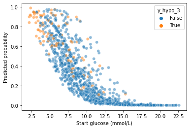

import pandas as pd
import ml_helper
from sklearn.metrics import roc_auc_score, accuracy_score
import matplotlib.pyplot as plt
import numpy as np
#import seaborn as sns
df = pd.read_csv('../../Results/probability_resultsduring_hypo_5_probas.csv')
df.y_hypo
0 False
1 False
2 False
3 False
4 True
...
973 False
974 False
975 False
976 False
977 False
Name: y_hypo, Length: 978, dtype: bool
df.head()
| bout_id | before_TIR_lv2_hypo | before_TIR_lv1_hypo | before_TIR_hypo | before_TIR_norm | before_TIR_hyper | before_TIR_lv1_hyper | before_TIR_lv2_hyper | before_TIR_hypo_exercise | before_TIR_normal_exercise | ... | probas_xgb_simp | probas_xgb_simp_fold | probas_lr_glyc | probas_lr_glyc_fold | probas_xgb_glyc | probas_xgb_glyc_fold | probas_lr_ts | probas_lr_ts_fold | probas_xgb_ts | probas_xgb_ts_fold | |
|---|---|---|---|---|---|---|---|---|---|---|---|---|---|---|---|---|---|---|---|---|---|
| 0 | 3046_675 | 0.0 | 0.0 | 0.0 | 100.0 | 0.0 | 0.0 | 0.0 | 0.0 | 100.0 | ... | 0.534135 | 1 | 0.166125 | 1 | 0.726409 | 1 | 0.132608 | 1 | 0.510617 | 1 |
| 1 | 3046_678 | 0.0 | 0.0 | 0.0 | 100.0 | 0.0 | 0.0 | 0.0 | 0.0 | 100.0 | ... | 0.064066 | 4 | 0.167974 | 4 | 0.022543 | 4 | 0.138579 | 4 | 0.002314 | 4 |
| 2 | 3046_674 | 0.0 | 0.0 | 0.0 | 100.0 | 0.0 | 0.0 | 0.0 | 0.0 | 100.0 | ... | 0.157334 | 2 | 0.404142 | 2 | 0.868260 | 2 | 0.480229 | 2 | 0.734898 | 2 |
| 3 | 3046_676 | 0.0 | 0.0 | 0.0 | 100.0 | 0.0 | 0.0 | 0.0 | 0.0 | 100.0 | ... | 0.146307 | 0 | 0.285637 | 0 | 0.011705 | 0 | 0.258788 | 0 | 0.147804 | 0 |
| 4 | 3046_680 | 0.0 | 50.0 | 50.0 | 50.0 | 0.0 | 0.0 | 0.0 | 75.0 | 25.0 | ... | 0.067248 | 5 | 0.786705 | 5 | 0.661435 | 5 | 0.835011 | 5 | 0.867799 | 5 |
5 rows × 213 columns
Simple model#
subgroup_df = df[['bout_id','ID','age','bmi','sex','start_glc','duration','form_of_exercise', 'time_of_day','hba1c','cpep','y_hypo', 'probas_lr_two']]
id_key = pd.read_csv('../1_preprocessing/id_key.csv').drop_duplicates()
#during_hypo = during_hypo.merge(id_key, on='ID')
during_hypo = subgroup_df.merge(id_key, on='bout_id', how='inner')
during_hypo.start_glc.hist() #title='Starting glucose'
<AxesSubplot:>
fig, ax = plt.subplots()
ax = sns.scatterplot(during_hypo.start_glc, during_hypo.probas_lr_two, hue=during_hypo.y_hypo_3, alpha=0.5)
ax.set_xlabel('Start glucose (mmol/L)')
ax.set_ylabel('Predicted probability')
#fig.savefig('scatter_during_3.svg')

during_hypo.head()
| before_TIR_lv2_hypo | before_TIR_lv1_hypo | before_TIR_hypo | before_TIR_norm | before_TIR_hyper | before_TIR_lv1_hyper | before_TIR_lv2_hyper | before_TIR_hypo_exercise | before_TIR_normal_exercise | before_TIR_hyper_exercise | before_number_hypos | before_avg_length_of_hypo | before_total_time_in_hypos | before_number_lv1_hypos | before_number_lv2_hypos | before_number_hypos_below_5 | before_avg_length_hypo_below_5 | before_total_time_in_hypos_below_5 | before_sd | before_cv | before_minimum_glucose | before_maximum_glucose | before_average_glucose | before_mage_mean | before_ea1c | before_percent_missing | ID | intensity | month | day | day_of_week | time_of_day | duration | form_of_exercise | start_glc | y_hypo | age | sex | years_since_diagnosis | bmi | hba1c | cpep | stratify | predicted | predicted_proba | |
|---|---|---|---|---|---|---|---|---|---|---|---|---|---|---|---|---|---|---|---|---|---|---|---|---|---|---|---|---|---|---|---|---|---|---|---|---|---|---|---|---|---|---|---|---|---|
| 0 | 0.0 | 20.0 | 20.0 | 46.666667 | 33.333333 | 33.333333 | 0.000000 | 26.666667 | 73.333333 | 0.000000 | 1 | 30.0 | 30.0 | 1 | 0 | 1 | 46.0 | 46.0 | 2.892848 | 38.063794 | 3.2 | 10.8 | 7.60000 | 5.8 | 6.408805 | 7.33 | 3004 | 14.0 | 6 | 13 | 2 | evening | 37.0 | aer | 10.4 | False | 30.047912 | male | 21.560575 | 24.957697 | 55.0 | 3.0 | 3004_False | 0.0 | 0.164611 |
| 1 | 0.0 | 12.5 | 12.5 | 75.000000 | 12.500000 | 12.500000 | 0.000000 | 43.750000 | 50.000000 | 6.250000 | 1 | 15.0 | 15.0 | 1 | 0 | 2 | 37.5 | 75.0 | 2.616287 | 42.411949 | 3.6 | 12.1 | 6.16875 | 8.2 | 5.508648 | 0.43 | 3004 | 14.0 | 7 | 6 | 4 | evening | 58.0 | aer | 11.9 | False | 30.047912 | male | 21.560575 | 24.957697 | 55.0 | 3.0 | 3004_False | 0.0 | 0.143539 |
| 2 | 0.0 | 0.0 | 0.0 | 18.750000 | 81.250000 | 81.250000 | 0.000000 | 0.000000 | 68.750000 | 31.250000 | 0 | 0.0 | 0.0 | 0 | 0 | 0 | 0.0 | 0.0 | 1.518278 | 13.274558 | 8.3 | 13.3 | 11.43750 | 5.0 | 8.822327 | 0.00 | 3018 | 15.0 | 6 | 18 | 0 | evening | 35.0 | aer | 13.4 | False | 30.913073 | female | 22.395619 | 22.309356 | 57.0 | 3.0 | 3018_False | 0.0 | 0.062199 |
| 3 | 0.0 | 20.0 | 20.0 | 46.666667 | 33.333333 | 20.000000 | 13.333333 | 40.000000 | 33.333333 | 26.666667 | 1 | 30.0 | 30.0 | 1 | 0 | 1 | 76.0 | 76.0 | 4.116517 | 53.461263 | 3.4 | 14.3 | 7.70000 | 6.5 | 6.471698 | 0.46 | 3027 | 12.0 | 6 | 5 | 1 | afternoon | 60.0 | aer | 12.1 | False | 27.663244 | female | 23.310062 | 27.514848 | 67.0 | 3.0 | 3027_False | 0.0 | 0.131660 |
| 4 | 0.0 | 0.0 | 0.0 | 75.000000 | 25.000000 | 6.250000 | 18.750000 | 0.000000 | 75.000000 | 25.000000 | 0 | 0.0 | 0.0 | 0 | 0 | 0 | 0.0 | 0.0 | 4.128635 | 48.679555 | 5.4 | 16.5 | 8.48125 | 10.5 | 6.963050 | 0.00 | 3032 | 18.0 | 6 | 16 | 5 | morning | 50.0 | aer | 16.4 | False | 55.572895 | female | 35.394935 | 27.660138 | 59.0 | 3.0 | 3032_False | 0.0 | 0.033212 |
during_hypo['start_glc_bin'] = pd.qcut(during_hypo['start_glc'], q=3)
during_hypo['bmi_bin'] = pd.qcut(during_hypo['bmi'], q=3)
during_hypo['age_bin'] = pd.qcut(during_hypo['age'], q=3)
during_hypo['duration_bin'] = pd.qcut(during_hypo['duration'], q=3)
during_hypo['hba1c_bin'] = pd.qcut(during_hypo['hba1c'], q=3)
def roc(df):
return pd.DataFrame([[roc_auc_score(df.y_hypo, df.probas_lr_two),
#accuracy_score(df.y_hypo_3, df.probas_lr_two),
df.shape[0],
len(set(df.ID_y)), df.y_hypo.mean()]], columns=['roc', 'bouts',
'participants', 'ratio hypos'])
Study#
during_hypo.groupby('study').apply(roc).round(3)
| roc | bouts | participants | ratio hypos | ||
|---|---|---|---|---|---|
| study | |||||
| extod_101 | 0 | 0.826 | 533 | 34 | 0.225 |
| extod_edu | 0 | 0.866 | 445 | 58 | 0.225 |
during_hypo.groupby(['sex']).apply(roc).round(3)
| roc | bouts | participants | ratio hypos | ||
|---|---|---|---|---|---|
| sex | |||||
| female | 0 | 0.854 | 515 | 43 | 0.235 |
| male | 0 | 0.828 | 463 | 49 | 0.214 |
during_hypo.groupby(['study', 'sex']).apply(roc).round(3)
| roc | bouts | participants | ratio hypos | |||
|---|---|---|---|---|---|---|
| study | sex | |||||
| extod_101 | female | 0 | 0.854 | 324 | 20 | 0.259 |
| male | 0 | 0.753 | 209 | 14 | 0.172 | |
| extod_edu | female | 0 | 0.859 | 191 | 23 | 0.194 |
| male | 0 | 0.877 | 254 | 35 | 0.248 |
during_hypo.groupby(['time_of_day']).apply(roc).round(3)
| roc | bouts | participants | ratio hypos | ||
|---|---|---|---|---|---|
| time_of_day | |||||
| afternoon | 0 | 0.861 | 214 | 65 | 0.271 |
| evening | 0 | 0.833 | 348 | 70 | 0.264 |
| morning | 0 | 0.848 | 416 | 75 | 0.168 |
during_hypo.groupby(['form_of_exercise']).apply(roc).round(3)
| roc | bouts | participants | ratio hypos | ||
|---|---|---|---|---|---|
| form_of_exercise | |||||
| aer | 0 | 0.844 | 778 | 89 | 0.230 |
| ana | 0 | 0.934 | 102 | 28 | 0.167 |
| mix | 0 | 0.815 | 97 | 30 | 0.247 |
BMI#
during_hypo.bmi.hist()
<AxesSubplot:>
during_hypo.bmi.hist()
during_hypo.groupby(['bmi_bin']).apply(roc).round(3)
| roc | bouts | participants | ratio hypos | ||
|---|---|---|---|---|---|
| bmi_bin | |||||
| (18.517, 22.914] | 0 | 0.804 | 333 | 26 | 0.204 |
| (22.914, 26.523] | 0 | 0.849 | 306 | 32 | 0.199 |
| (26.523, 34.294] | 0 | 0.874 | 297 | 28 | 0.269 |
during_hypo.groupby(['duration_bin']).apply(roc).round(3)
| roc | bouts | participants | ratio hypos | ||
|---|---|---|---|---|---|
| duration_bin | |||||
| (9.999, 35.0] | 0 | 0.926 | 329 | 67 | 0.176 |
| (35.0, 60.0] | 0 | 0.831 | 444 | 80 | 0.234 |
| (60.0, 120.0] | 0 | 0.760 | 205 | 69 | 0.283 |
during_hypo.groupby(['start_glc_bin']).apply(roc).round(3)
| roc | bouts | participants | ratio hypos | ||
|---|---|---|---|---|---|
| start_glc_bin | |||||
| (2.1990000000000003, 7.4] | 0 | 0.745 | 335 | 68 | 0.457 |
| (7.4, 10.9] | 0 | 0.712 | 320 | 80 | 0.162 |
| (10.9, 22.6] | 0 | 0.880 | 323 | 75 | 0.046 |
during_hypo.groupby(['age_bin']).apply(roc).round(3)
| roc | bouts | participants | ratio hypos | ||
|---|---|---|---|---|---|
| age_bin | |||||
| (19.766, 44.742] | 0 | 0.841 | 332 | 38 | 0.190 |
| (44.742, 52.049] | 0 | 0.840 | 311 | 26 | 0.206 |
| (52.049, 80.159] | 0 | 0.840 | 303 | 27 | 0.277 |
during_hypo.groupby(['hba1c_bin']).apply(roc).round(3)
| roc | bouts | participants | ratio hypos | ||
|---|---|---|---|---|---|
| hba1c_bin | |||||
| (41.999, 53.0] | 0 | 0.779 | 325 | 24 | 0.295 |
| (53.0, 61.0] | 0 | 0.876 | 354 | 35 | 0.220 |
| (61.0, 88.0] | 0 | 0.833 | 243 | 29 | 0.148 |
during_hypo = pd.read_csv(filenames[1])
during_hypo_split.groupby('study').apply(lambda group: accuracy_score(group.y_hypo, group.predicted_proba))
during_hypo.groupby('ID').apply(lambda group: accuracy_score(group.y_hypo, group.predicted)).describe()
count 88.000000
mean 0.834875
std 0.174037
min 0.333333
25% 0.744318
50% 0.881176
75% 1.000000
max 1.000000
dtype: float64